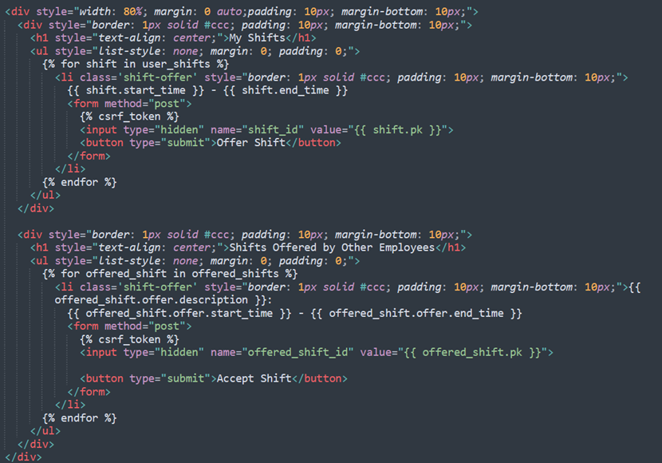

The above video shows a demonstration of the website. Click on the next slides to see how some of the main code was implemented.
The provided code snippet illustrates the process of adding shifts in a Django web application. The addshift function begins by verifying if the user accessing the view is a manager, determining their authorization to proceed or displaying an unauthorized message. The function then retrieves the current manager's store name to filter employees for ethical roster management. The list of existing shifts, essential for the manager's reference, is obtained and passed into the HTML template. If the HTTP request method is POST, indicating a shift submission, the function stores the new shift in the database. Regardless of the outcome, the page displays the roster along with the newly added shift upon completion. The form structure required for shift submission is defined in the forms.py file, adhering to Django conventions for form storage.
The provided code snippet outlines the process of a manager editing pay information for employees in a Django web application. The manageEmployees function, responsible for this functionality, relies on a form from the forms.py file to present the required data for editing, including data types. The function first verifies the manager's role before proceeding and then filters the displayed employees based on the manager's store affiliation. The list of employees is retrieved for the manager to view and decide on edits using editable textboxes. Upon pressing the save changes button, the POST method is triggered, saving the edited employee data in the profile table, which maintains a one-to-one relationship with the user table. Success messages are provided upon completion, and the page reloads to reflect the updated information.
The provided code snippet illustrates the process of employees requesting holiday time in a Django web application through the manageEmployees function. The function utilizes a form from forms.py to collect required data, including dates, following Django conventions. It first checks if the user's request is a POST method and validates the form based on predefined rules. Upon successful validation, a success message is displayed, and the holiday request is stored in the designated table. The function also provides the user with a list of their previous holiday requests for reference. The forms.py code defines the request form with fields corresponding to the holidayRequest model, and it includes an overridden init method to capture the user making the request. Additionally, the save method is overridden to store essential data such as dates and the user submitting the request.
The provided code snippet outlines the process of a manager responding to holiday requests in a Django web application. The view function, dedicated to this functionality, begins by checking the manager's role and retrieving the store name to ensure they can only respond to requests from employees in their store. The function then assesses the HTTP request method, and if it's a POST request, indicating a decision on holiday approval or denial, it retrieves the relevant data from the request. The holiday status is updated accordingly, and if approved, a new shift record is created with a 'holiday' description for the user. The page displays the list of holiday requests along with their respective statuses, providing a comprehensive overview for the manager. No form is required in this case, as the focus is on modifying the status of pre-existing requests rather than collecting new data.

The provided code snippet illustrates a unique and challenging feature of a Django web application where employees can offer or accept shifts from colleagues. The view function, designed for the shift offer page, retrieves a list of the user's shifts and shifts offered by colleagues in their store. The function checks for a POST request and determines whether the user is offering a shift or accepting an offered shift based on the submitted shift_id or offered_shift_id. If a shift is offered, the user ID for that shift is updated to the current user, and the page is redirected for the user to view the shifts and offered shifts again. The implementation works effectively, but the developer acknowledges potential improvements, such as adding a time limit to automatically delete shift offer records for past shifts, enhancing the application's functionality and user experience.
The presented code snippet showcases the view function for a Django web application allowing managers to add new employees. The function begins by checking the user's role, ensuring only managers can access the add employee page. If the HTTP request method is POST, indicating a form submission, the function validates the form based on the rules specified in the forms.py file. Upon successful validation, a new user is created, associated with a profile, and automatically assigned the manager's store name. This design choice eliminates the need for managers to manually input the store name for each new employee. Notably, the absence of a manager registration page is explained, taking inspiration from similar websites, with the rationale that manual addition of managers through the Django admin site ensures legitimacy and control over user access to the application.